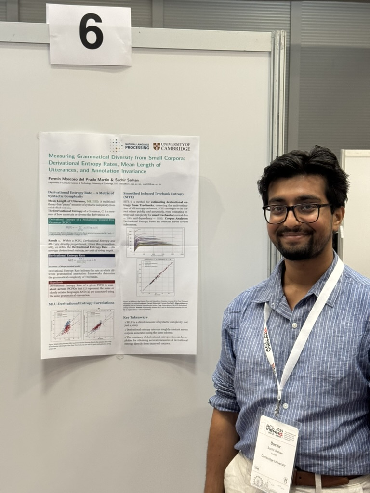

Measuring Grammatical Diversity from Small Corpora
A theoretical and empirical case that mean length of utterances is not a rough stand-in for syntactic complexity but a fundamental measure of it, tied to the entropy of the grammar that produces the sentences.

Several fields lean on corpora to estimate how varied someone's grammar is: language acquisition, the neuropsychology of language, the study of aging, historical linguistics. In each, a treebank is treated as a representative sample of the syntactic structures a speaker or community might produce. The trouble is that these samples are small, and generalising the full range of possible structures from a limited set requires careful extrapolation whose accuracy is bounded by how little data you have.1Moscoso del Prado Martín. Measuring Grammatical Diversity from Small Corpora: Derivational Entropy Rates, Mean Length of Utterances, and Annotation Invariance, Computational Linguistics, 2025.
The central link
The paper's core claim is that a grammar's derivational entropy and the mean length of the utterances it generates are fundamentally linked. From that link comes a new quantity, the derivational entropy rate. The consequence is a reappraisal of mean length of utterances (MLU), a measure long used as a convenient index in acquisition research.2MLU has a long history as a developmental yardstick in child language research; the paper's contribution is to give it a formal grounding rather than treat it as a heuristic. Preprint: arXiv:2412.06095. The argument is that MLU is not a mere proxy but a genuine measure of syntactic diversity in its own right.
Annotation invariance
The other strand concerns the framework you annotate with. Different grammatical annotation schemes assign different complexities to the same treebank, which makes cross-study comparison fragile. The derivational entropy rate indexes the rate at which the choice of annotation framework determines the measured complexity. Read together with MLU, it offers a theory-free reading of grammatical complexity, one that does not depend on committing to a particular grammar formalism.
Estimating from little data
To make the measures usable, the paper introduces the Smoothed Induced Treebank Entropy, or SITE, a tool for estimating these quantities accurately even from very small treebanks. That is the practical payoff: the settings where these measures are needed most, such as a child's early speech or a fragment of a historical corpus, are exactly the settings where data is scarce, and a method that stays reliable there is what these fields have been missing.
What I take from it is a tidy result. A measure people already compute out of convenience turns out to sit on a firm theoretical footing, and pairing it with the entropy rate gives a way to talk about grammatical complexity without first arguing about which annotation scheme is correct. The closing discussion draws out what this means for both NLP and human language processing.